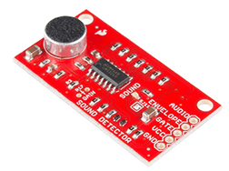
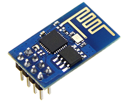
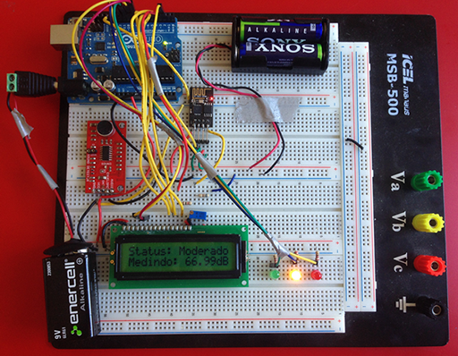
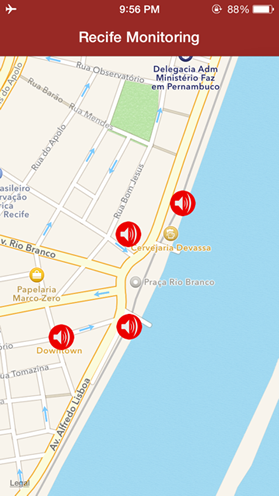

Nowadays, even without noticing, we have been surrounded by a lot of noise. This noise comes from all sorts of sources such as bars, cars, trains, parties and so on. When this noise starts affecting our well-being or health, we give it a name: noise pollution.
Therefore, my idea was to create a device that would be cheap to assemble and that could be installed in certain areas of the city, constantly updating data about sound levels to a web server and making them available to the population.
In order to measure the sound level (analog value), I decided to use the SparkFun Sound Detector (SSD). This little IC has three outputs: audio, gate and envelope. As the purpose is to measure the amplitude of sound, to me, the envelope output is what separates this board from the others (figure below).

Besides, the Arduino UNO works as the “brain” in the system. Regarding the interaction with the SSD, it reads the envelope output into the analog port A0 and converts it to a value in decibel, a logarithmic scale used in sound measuring.
Additionally, the ESP8266 module (figure below), this extremely versatile IC was used as a station, connecting the hardware to the local network using WiFi. It is important to mention that the more advanced versions of the ESP have an ADC port, which would exclude the use of an Arduino. However, in order to make it work for this project, two ports of the Arduino were used to transmit and receive data from the ESP (TX and RX).

After assembling the parts on a breadboard, I noticed that the user should be able to read the output data in two forms: being near and far from the device. Thus, I added a regular LCD that would print the status and the measure in decibels. Furthermore, three LEDs would be able to alert the user about the loudness: if the green one is on, it means the place is quiet, if yellow the ambient noise is moderate and if red, it’s loud.

After doing a couple of tests with the ESP using a voltage regulator, I noticed that the response of the module is better when powered by a clean voltage source, which explains the two batteries used to exclusively power it, once the module works with 3,3V.
As a way of testing the system, I used the ThingSpeak server to update data directly from my device to the cloud. By using their API, I could read the data coming as a JSON object, parse it, and print it to the user. I set some pins on the map, where the user would hypothetically choose the place he wanted to monitor, and then notify by email or call in case it is being loud.

The points on the map are from a central part of Recife, the city I live. The idea is to have several devices spread around a given city, updating data about how noisy is the location at any time. Finally, in the video I explain how the hardware and the software work together. :)